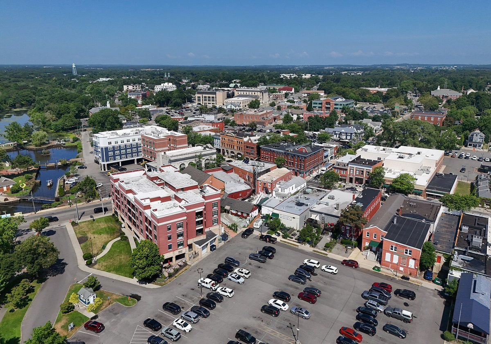

미국 뉴욕주 리버헤드, 닫은 매립장 위 태양광 7MW·배터리 13.68MWh 완공 앞둬…요금 크레딧 60%는 주민·소상공인 120여 곳 몫

읍은 땅 빌려주고 크레딧 40%와 연 임대료 15만 달러 이상 받아…민간 개발사 CVE가 짓고 25년 운영
미국 뉴욕주 롱아일랜드 리버헤드(Riverhead) 읍이 1993년 문을 닫고 흙으로 덮은 영스 애비뉴(Youngs Avenue) 매립장 위에 들어서는 태양광·배터리 시설이 완공을 며칠 앞두고 있다고 밥 컨(Bob Kern) 읍의원이 22일 밝혔다. 민간 개발사 CVE 노스아메리카(CVE North America)가 짓는 이 시설은 태양광 약 7MW와 배터리 13.68MWh를 묶은 것으로, 해마다 약 9,400MWh의 전기를 만들 것으로 예상된다. 태양광 출력의 40%에 해당하는 전기요금 크레딧은 읍이 받고, 나머지 60%에는 지역 가구·소상공인 120곳 넘게 가입해 자기 지붕에 패널을 달지 않고도 요금 크레딧을 받는다. 컨 읍의원은 땅을 빌려준 읍이 가동 때 일회성 보너스 7만 달러 이상, 해마다 임대료 15만 달러 이상과 세금 대신 내는 돈(PILOT) 약 3만8,000달러를 받고 이후 액수도 늘어날 것으로 추산했다. 2023년 7월 읍의회가 승인한 임대 계약에는 직류 1MW당 가동 보너스 1만500달러, 첫해 임대료 1MW당 2만2,000달러, 매년 2% 인상과 16년째 2만 달러 추가 인상이 담겼고, 운영 기간은 25년에 5년씩 두 차례 연장할 수 있으며 배터리도 허용 설비로 명시됐다. 이 매립장에서는 앞서 두 업체의 태양광 시도가 무산됐고, 읍은 2022년 11월 공모로 CVE를 고른 뒤 2025년 5월 착공했으며 준공식 날짜는 아직 정하지 않았다.
시민에너지 관점
닫힌 매립장 위 7MW 발전소가 읍에는 해마다 임대료와 요금 크레딧을, 주민·소상공인 120여 곳에는 지붕 없이도 요금 크레딧을 돌려준다는 것은 쓸모없던 공공부지가 지역의 수입원이 될 수 있음을 보여 준다. 매립지는 사업이 번번이 무산된다는 우려가 있지만, 리버헤드는 두 번의 실패 뒤 공모를 거쳐 임대료 인상률과 운영 기간까지 계약에 못 박은 끝에 착공에 이르렀다. 다만 발전소의 주인은 여전히 민간 개발사여서, 주민은 크레딧을 나눠 받는 데 머물고 자산의 주인이 되지는 못한다는 한계도 분명하다. 국내 지자체도 매립지·공공부지 태양광을 내줄 때 임대료에 그치지 말고 주민이 지분을 갖는 공동 소유 구조부터 조건으로 걸어야 한다.
출처: RiverheadLOCAL 2026-10-23 Denise Civiletti 원문 보기
米ニューヨーク州リバーヘッド、閉鎖した処分場に太陽光7MW・蓄電池13.68MWh完成間近…料金クレジットの60%は住民・小規模事業者120余り
町は土地を貸してクレジット40%と年15万ドル超の賃料を受け取る…民間開発会社CVEが建設し25年運営
米ニューヨーク州ロングアイランドのリバーヘッド（Riverhead）町が1993年に閉鎖し覆土したヤングス・アベニュー（Youngs Avenue）処分場の上に建設中の太陽光・蓄電池施設が、完成まであと数日に迫っていると、ボブ・カーン（Bob Kern）町議会議員が22日に明らかにした。民間開発会社CVEノースアメリカ（CVE North America）が建設するこの施設は、太陽光約7MWと蓄電池13.68MWhを組み合わせたもので、年間約9,400MWhを発電する見込みだ。太陽光出力の40%に当たる電気料金クレジットは町が受け取り、残る60%には地域の世帯・小規模事業者120以上が加入し、自宅の屋根にパネルを付けずに料金クレジットを受け取る。カーン議員は、土地を貸した町が稼働時に一時ボーナス7万ドル超、毎年の賃料15万ドル超と税に代わる支払い（PILOT）約3万8,000ドルを受け取り、その後も金額は増えると試算した。2023年7月に町議会が承認した賃貸契約には、直流1MW当たり稼働ボーナス1万500ドル、初年度賃料1MW当たり2万2,000ドル、毎年2%の引き上げと16年目の2万ドル追加引き上げが盛り込まれ、運営期間は25年で5年ずつ2回延長でき、蓄電池も認められた設備として明記された。この処分場では以前に2社の太陽光計画が実現せず、町は2022年11月に公募でCVEを選び、2025年5月に着工した。完成式の日取りはまだ決まっていない。
市民エネルギーの視点
閉鎖された処分場の上の7MWの発電所が、町には毎年の賃料と料金クレジットを、住民・小規模事業者120余りには屋根がなくても料金クレジットを還元することは、使い道のなかった公有地が地域の収入源になりうることを示している。処分場は事業が何度も頓挫するという懸念もあるが、リバーヘッドは2度の失敗の後、公募を経て賃料の引き上げ率や運営期間まで契約で定め、着工にこぎつけた。ただし発電所の持ち主は依然として民間開発会社であり、住民はクレジットの分配を受けるにとどまり資産の持ち主にはなれないという限界もはっきりしている。韓国の自治体も処分場や公有地を太陽光に貸す際は賃料だけで終わらせず、住民が持ち分を持つ共同所有の仕組みをまず条件にすべきだ。
出典: RiverheadLOCAL 2026-10-23 Denise Civiletti 原文を読む
美国纽约州里弗黑德封场垃圾填埋场上的7MW光伏与13.68MWh储能即将完工…60%电费抵扣额度归120多户居民和小商户
镇政府出租土地，获得40%抵扣额度和每年15万美元以上租金…由民营开发商CVE建设、运营25年
美国纽约州长岛里弗黑德（Riverhead）镇议员Bob Kern 22日表示，建在该镇1993年关闭并覆土封场的Youngs Avenue垃圾填埋场上的光伏和电池储能设施，距离完工只剩几天。这一设施由民营开发商CVE North America建设，由约7MW光伏和13.68MWh电池储能组成，预计每年发电约9,400MWh。相当于光伏出力40%的电费抵扣额度归镇政府，其余60%已有120多户当地家庭和小商户加入，无需在自家屋顶安装光伏板即可获得电费抵扣。Kern估算，出租土地的镇政府将在设施投运时获得7万美元以上的一次性奖励，每年获得15万美元以上的租金和约3.8万美元的代税款（PILOT），此后金额还会增加。镇议会2023年7月批准的租赁合同规定，按直流每兆瓦支付投运奖励1.05万美元，首年租金每兆瓦2.2万美元，此后每年上调2%，第16年再追加2万美元；运营期25年，可两次各延长5年，并明确储能电池属于许可设施。此前曾有两家企业试图在该填埋场建设光伏但未能实现，镇政府2022年11月通过公开招标选定CVE，2025年5月开工，竣工仪式日期尚未确定。
市民能源视角
封场填埋场上的7MW电站，每年为镇政府带来租金和电费抵扣，也让120多户居民和小商户不装屋顶光伏就能享受电费抵扣，说明闲置的公共土地可以成为地方的收入来源。有人担心填埋场项目屡屡落空，但里弗黑德在两次失败后，通过公开招标并在合同中写明租金涨幅和运营期限，最终得以开工。不过电站的所有者仍是民营开发商，居民只是分享抵扣额度，未能成为资产的主人，这一局限也很明显。韩国地方政府在把填埋场和公共用地出租建光伏时，也不应止于收取租金，而应首先把居民持股的共同所有结构作为条件。
来源: RiverheadLOCAL 2026-10-23 Denise Civiletti 查看原文
Riverhead, New York, nears completion of 7MW solar and 13.68MWh battery project on closed landfill, with 60% of bill credits going to more than 120 residents and small businesses
The town leases the land and receives 40% of the credits plus more than 150,000 dollars a year in rent; private developer CVE builds and runs it for 25 years
A solar and battery storage facility being built on the Youngs Avenue landfill, which the town of Riverhead on Long Island, New York, closed and capped in 1993, is days away from completion, Council Member Bob Kern said on October 22. Developed by private company CVE North America, the facility combines about 7MW of solar with 13.68MWh of battery storage and is expected to generate about 9,400MWh a year. The town will receive bill credits tied to 40% of the solar output, while more than 120 local households and small businesses have signed up for the remaining 60%, earning credits on their bills without installing panels on their own roofs. Kern estimated that the town, as landlord, will receive a one-time bonus of more than 70,000 dollars when the facility starts operating, more than 150,000 dollars a year in rent and about 38,000 dollars a year in payments in lieu of taxes (PILOT), with the amounts rising in later years. The lease the Town Board approved in July 2023 sets a commercial-operations bonus of 10,500 dollars per megawatt of direct-current capacity and first-year rent of 22,000 dollars per megawatt, with 2% annual increases and an extra 20,000-dollar increase in year 16; it runs for 25 years with two optional five-year extensions and expressly covers battery storage. Two earlier solar attempts at the landfill did not go ahead; the town selected CVE through a request for proposals in November 2022, construction began in May 2025, and no ribbon-cutting date has been set.
Citizen Energy View
A 7MW plant on a closed landfill that returns rent and bill credits to the town every year, and bill credits without rooftop panels to more than 120 residents and small businesses, shows that unused public land can become a source of local income. There may be worries that landfill projects keep falling through, but after two failures Riverhead went through a competitive process and wrote the rent escalation and operating term into the contract before breaking ground. Still, the plant remains owned by a private developer, so residents share in the credits without becoming owners of the asset, a clear limitation. Korean local governments that lease landfills and public land for solar should not stop at collecting rent but should first make shared ownership with resident equity a condition.
Source: RiverheadLOCAL 2026-10-23 Denise Civiletti Read the original